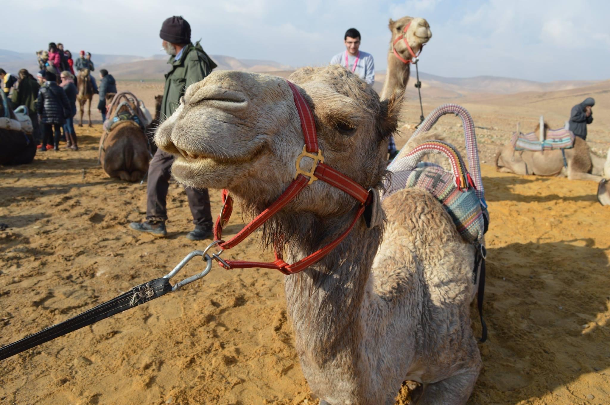

Israel
Sunset over the Dead Sea
The first time I went to Israel was for my birthright trip during winter break of 2015-16. If you don't know what birthright is, basically it's a free trip to Israel for young Jewish adults to be able to visit their homeland. I was there over New Years Eve, and was the youngest person in my group. There were about 25-30 of us, and we travelled with a few different guides, a security guard, and Israeli soldiers who were near our age. It was definitely a cultural push, but I ended up really bonding with one of the girls and we still keep in touch today. We travelled all over, from the desert to Jerusalem and Tel Aviv to Masada and the Dead Sea.
Camel in the Desert
The second time I went to Israel was a bit different. It was the end of 2016 and my family took a trip there to visit my younger brother. He had enrolled in an Israeli highschool and had moved himself into a dorm a few months prior, so we wanted to make sure he was settling in properly. After this trip I could definitely recognize a difference between travelling with your peers and being with your family.